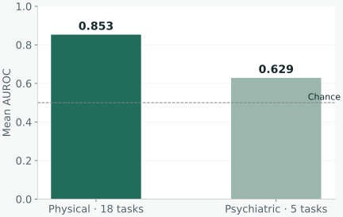

Participant separation
Subjects are separated across training and evaluation. Multiple recordings from one participant must not turn into train/test leakage.
Independent benchmark · Preceded by CMU course research
Evaluate whether a voice model transfers across diseases, languages, and datasets, rather than relying on one attractive in-dataset score.
My role Sole author of the VoxClinBench benchmark. The earlier Bridge2AI model-building work was a course team project; its models and the later independent benchmark have different scopes.

The initial work combined clinical voice modalities in a CNN–Transformer model and compared it with pretrained speech representations. A frozen speech encoder plus a simple classifier was a strong baseline.
I turned the broader evaluation problem into VoxClinBench: 23 scored binary tasks, four languages, and five corpora, with an additional cross-language reference task. The benchmark separates physical and psychiatric conditions and tests cross-corpus transfer.
Subjects are separated across training and evaluation. Multiple recordings from one participant must not turn into train/test leakage.
Five-seed evaluation, participant-level bootstrap, paired model comparisons, and family-specific correction for multiple tests.
Within-dataset performance and cross-language transfer are separate measurements. Transfer can work for one condition and fail for another.
An evaluation package, task manifests, reference outputs, and dataset documentation. Credential checks precede access to restricted corpora.
The reference macro AUROC is 0.853 across 18 physical tasks and 0.629 across five psychiatric tasks . AUROC summarizes how well the model ranks positive cases above negative cases; 0.5 is chance-level ranking.
These aggregate values describe a reference evaluation, not a clinical diagnostic claim. The two families use different datasets and task compositions. Strong performance on one condition does not establish transfer to another population or language.
Only aggregate research results appear here. Restricted recordings, participant-level health information, and raw predictions are not distributed through this website.
Benchmark code and task cards ↗
Methods: pretrained speech encoders, frozen probes, multimodal learning, cross-corpus evaluation, bootstrap, DeLong comparisons.